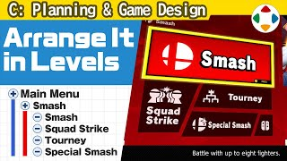
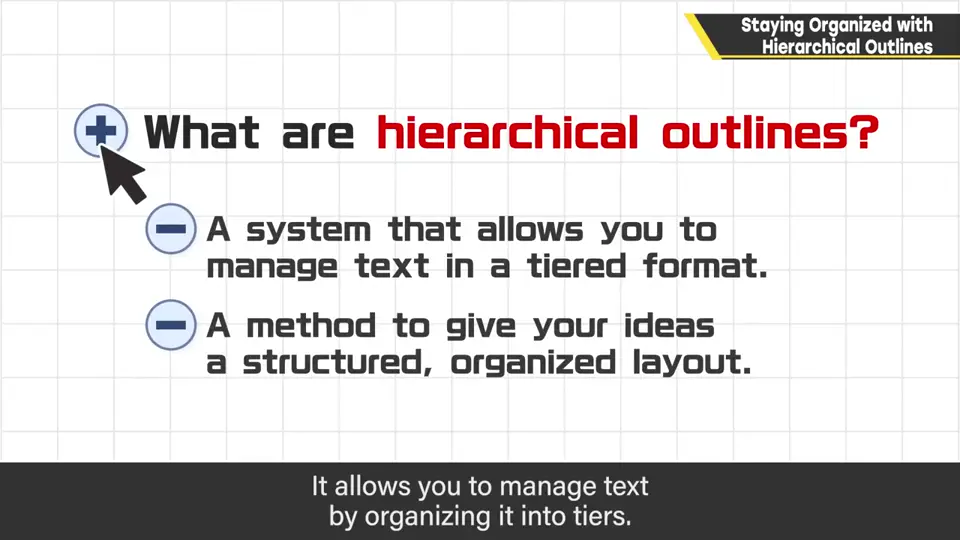
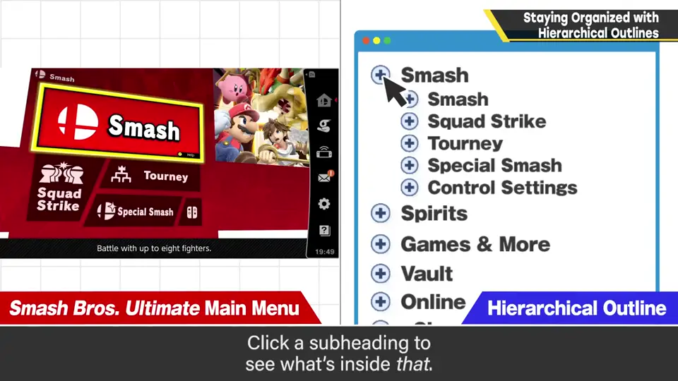
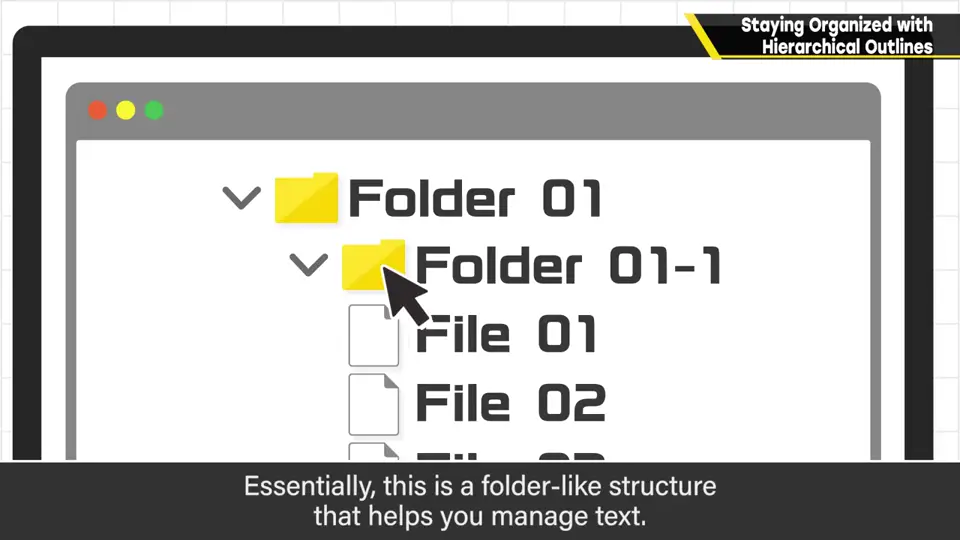
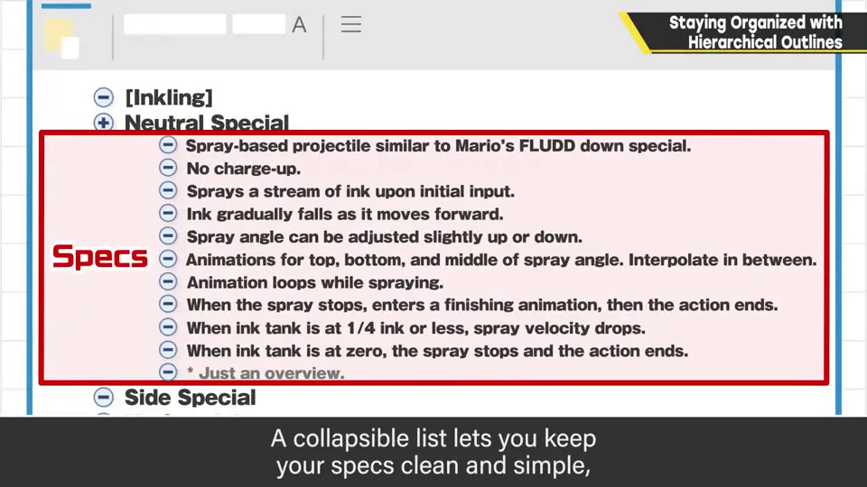
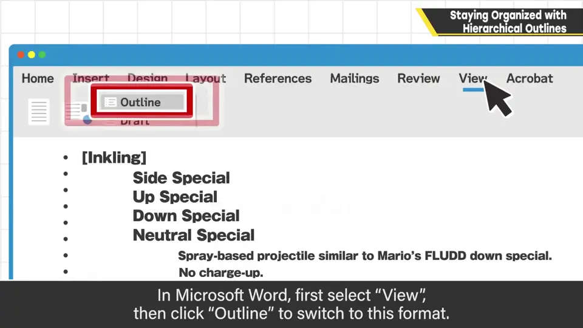
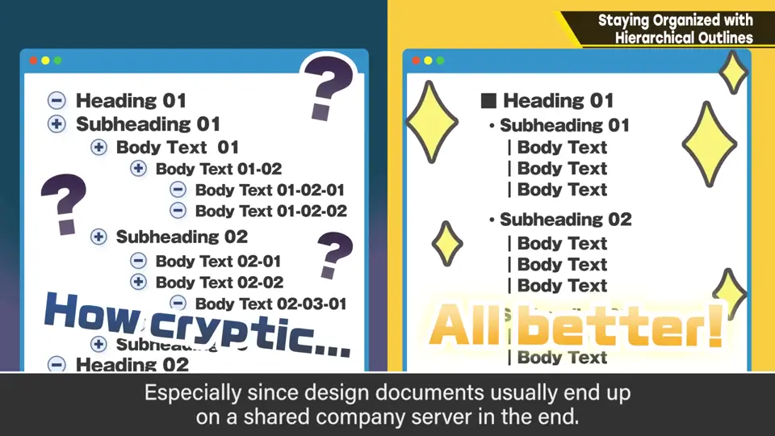
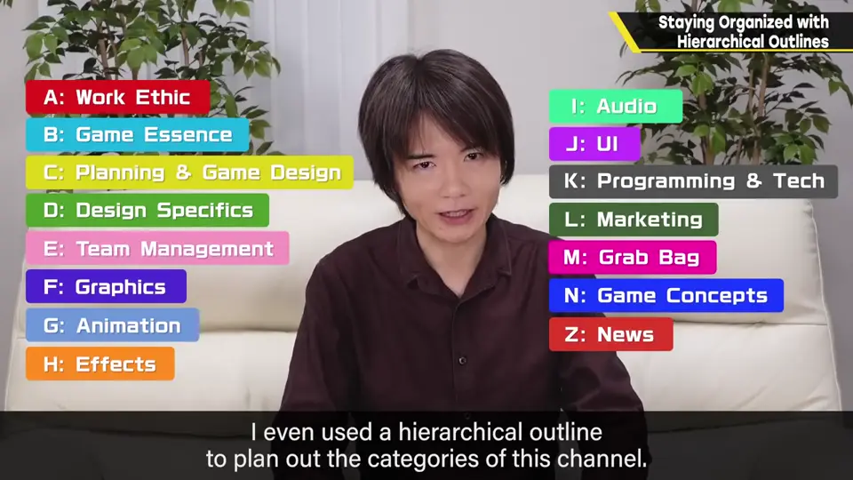

速览
这是 Microsoft Word 也有的功能，但跟员工提起时常有人说不知道，所以想解说一下——对樱井来说，没有它就开始不了工作。分层大纲是一种思路或系统，能把文字分层管理。例如和《大乱斗 特别版》顶层菜单相同的结构：点开标题能看到里面的内容，再展开又能看到更里面——简单说就是用文字管理像文件夹那样的层级结构。例如整理斗士必杀技的规格：在斗士列表下写必杀技列表，再写入规格；把规格折叠起来就变简洁，位置调换、层级替换都很自由。Word 中选择「视图」→「大纲」就会变成这种格式。樱井开始使用分层大纲大概是 1993 年，配备 Macintosh 的时候。整理各种东西已经离不开它，汇总点子时不可或缺。不过它是给自己整理点子用的，要给别人看需要整理清楚（规格书最终也会汇总到公司内网）。总之它能广泛用于整理思路；这个节目最初也是用分层大纲规划分类的。怎么用因人而异，先试着用用吧。
1. 什么是分层大纲 0:03
这是 Microsoft Word 里也有的功能，但跟员工提起时，常有人说「不知道有这个」，所以想解说一下。对樱井来说，没有它工作就开始不了。
分层大纲（hierarchical outline）是一种思路或系统：能把文字分层级管理，以结构化、有条理的方式整理点子。


例如这和《大乱斗 特别版》顶层菜单是同样的结构：点击标题就能展开内容，再展开能看到更深一层。

2. 实例：整理必杀技规格 0:55
例如整理斗士必杀技的规格：在斗士列表下写出必杀技列表，再在里面写规格。规格本身可以折叠起来让结构保持简洁；位置调换、层级替换也很自由。


Word 的话，选择「视图」里的「大纲」，就会变成这种格式。
3. 樱井的使用方式 1:27
樱井开始用分层大纲大概是 1993 年，公司配备 Macintosh 的时候。整理汇总各种东西都离不开它，整理点子更是不可或缺。
不过，这是用来整理自己的点子的；要给别人看，就需要整理清楚——规格书最终也都会汇总到公司内网。


总之它能广泛用于整理思路。这个节目最初也是用分层大纲来规划分类的。怎么用因人而异，先试着用用看吧。
自测题
1. 什么是分层大纲？
把文字分层级管理的系统，像用文字管理的文件夹结构，可折叠、展开、调换。 0:30
2. 在 Word 中如何使用大纲格式？
选择「视图」中的「大纲」。 1:17
3. 樱井说分层大纲主要是给谁用的？给别人看要注意什么？
主要用于整理自己的点子；给别人看需要先整理清楚。 1:43